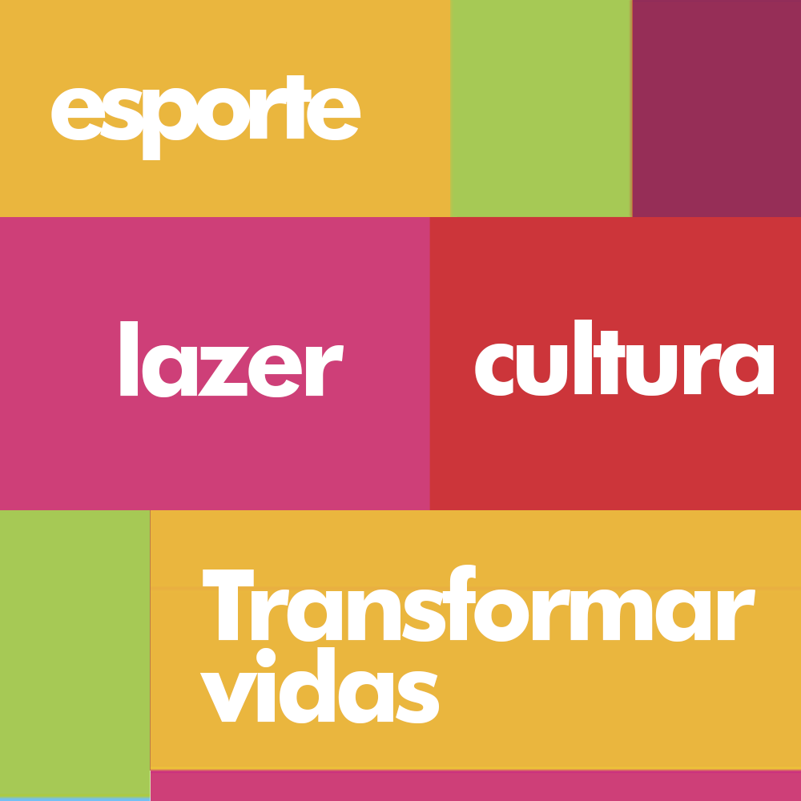

Desde 2005, o IPACE tem sido um farol de esperança e desenvolvimento para comunidades em São Paulo.

Inaugurada em 28 de Maio de 2005 e visando o atendimento das carências, o IPACE (Instituto Pan-Americano de Cultura e Esporte - originalmente) ampliou muito as áreas de atuação, associando-se a grandes projetos em parceria com as administrações Públicas de várias Cidades, Estados e Governo Federal.
Participação ativa em grandes programas como: SESC Verão, Virada Esportiva, Virada Cultural, Clube Escola, Criança Esperança, Jogos Regionais do Idoso, entre outros.
Outros destaques: Torneio de Judô SA (450), Virada com Skate (300), Badminton (450), 1º Torneio de Skate SCS (500), 1º Festival Patinação SCS (1.750), VII OPEN FESTIVAL IPACE (2.200), Espetáculo "Noite do Oscar" (4.800).
Continuidade do Projeto "Ruas da Gente" e manutenção das Escolas de Patinação, Judô e Karatê no CDC/PUC.
Manutenção das Escolas Municipais em SCS e projetos CDC/PUC.
Hoje, o Instituto Pangea de Ação Cultural e Esportiva é uma referência em projetos sociais. Através do esporte, da cultura e da educação, continuamos a escrever nossa história dia após dia, transformando vidas e construindo um futuro com mais oportunidades para todos.
Cadastre-se para receber atualizações, relatórios de impacto e convites para eventos.
Doutor Ferreira Lopes, 58
Vila Sofia, São Paulo - SP